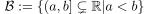
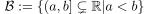
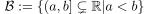
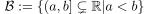
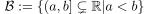

The upper limit topology on is defined via the basis 
analogous to the lower limit topology
Author: Anton Zakrewski
Email: anton.zakrewski@campus.lmu.de
 is defined via the basis 
is defined via the basis 
is defined via the basis 
is defined via the basis 